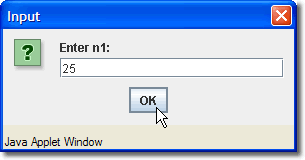
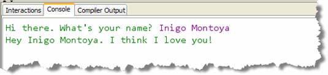

While you can use assignment to place values into your variables, often, you won't know what value should be used until the program actually runs. Instead of you, the programmer, supplying the values, you'll need to ask the user for some input, and use that input to initialize your variables. That's the first step towards creating interactive programs.

Getting input from the user can be done in several different ways:- you can use a text-field and retrieve the information when the user types in some data and presses a button (or the Enter key).
- you can use an "input widget" like a drop-down list, a checkbox, or a radio button.
- you can use a dialog box that asks for some text and returns the text to your program when the user clicks "OK".
- you can read console input from the keyboard, and use that input to initialize your variables.
We'll use most of these techniques throughout this class.
We'll look at the process of reading user
input from the system console by using
the Scanner class that was added in Java 5.
The Greeter Program
We're going to start this assignment by building the simplest interactive program that I could think of. The programs you wrote in Chapter 1 all had the same form; you introduced yourself and professed your love for the user, all without knowing who was actually running your program.
Let's give the user the chance to introduce his-or-her self. The
Greeter program looks like this:

Basically, this looks like one of the output-only programs you wrote last week, with one difference: the portion in purple, "Inigo Montoya", is supplied by the user, instead of being printed as aString
literal.
Step 1: Use What You Know
Instead of worrying about the interactive portion of the program, build the part that you already know how to complete; in other words, create a simple console-mode output-only program, "hard-coding" in the name as a literal.
After last week, you should be able to do these steps from memory. That's also a good strategy for the exams: do the simple parts first, and, always work step-by-step. So, open up DrJava and:
- Create just the class (no methods) for Greeter.java
- Save it in your Week02 folder.
- Compile your code to make sure you haven't made any silly syntax errors.
Always try to go step-by-step; don't write the entire program at once. Always create, save and compile the basic class structure, even if you really know how to do the whole thing. Incremental development allows you to concentrate on smaller steps, so, if a problem arises, the solution is usually obvious.
Display the output
Now, add the "incantation" you need to start the program running.
- In other words, add the
main()method. - Compile the program once again.
Note, you should memorize this set of steps, so that it becomes second nature.
Now, add the output statements to print the output just as shown in the picture above. Remember, we'll "pretend" that there is no input, and just print the name, "Inigo Montoya", just like any other part of the output.
At this point, you can compile and test your program, and you'll see that some of the tests actually pass. (That's because one of the input values I test with is the name Inigo Montoya
Step 2: Add the Interactions
To make your program interactive, you need to:
- Create a variable to hold the user's input. Because
the user's name will consist of "text" (as opposed to numeric
input), you'll need to create a
Stringvariable. - Next, you'll need to ask the user to enter some data. This is called a prompt.
- Then, you'll need to pause the program, read the input and store it in your variable.
Creating Your Variable
Section 2.1 - Variables explained how to
create a variable. Go ahead and add a variable to your program
now. Name it something like userName. You don't
have to give it a value when you create it. We'll ask the
user to supply a value.
Creating the Scanner
To read the input, you need to first create a Scanner
object. Section 2.3 - Input and Output explains how to
do this. You should make sure you have read this material
before you attempt this.
- Create your
Scannerobject at the beginning of themain()method, before you do any output. - I like to name the variable
cin, because that's the name of the similar object in C++; that way when you go to CS 150 and CS 250, you'll be "pre-conditioned". - Before your code will compile, you'll need to
importtheScannerclass. Section 2.3 has the information you need to do that as well.
After you create your String ans Scanner
variables, compile your program again, just to make sure
you haven't introduced any new syntax errors.
Reading Your Input
Before you can read your input, you need to "clean up" the prompt. We started by hard-coding in the name "Inigo Montoya". In your editor, just back-space over the name, making sure to leave one space after the colon that ends the prompt line.
Next, change the prompt line from println() to
print(), so that the user's input will appear
on the same line as the prompt. When the user types in their
response and sends it to your program by pressing the Enter key,
that will add the newline that you are removing.
Finally, add a blank line between your two output lines and read the input into your variable. The command that you want to use is:
userName = cin.nextLine();
assuming that your String variable is named
userName and your Scanner variable
is named cin.
Compile and test again.
Processing the Output
You'll notice that your score didn't get any higher, even after you've added the input. Why?
Because, even though you're correctly reading the user's input, your program still greets them as "Inigo Montoya", whatever name they enter. That seems like a bug!
To fix it, break your output line into two pieces, removing
the name "Inigo Montoya", and using concatenation to replace
it with your variable userName instead.
Compile and test one last time by running Check.
If you didn't do as well as you thought, ask for some help on Piazza.
Paste your results into
the PDF form and submit it to Blackboard before the deadline.